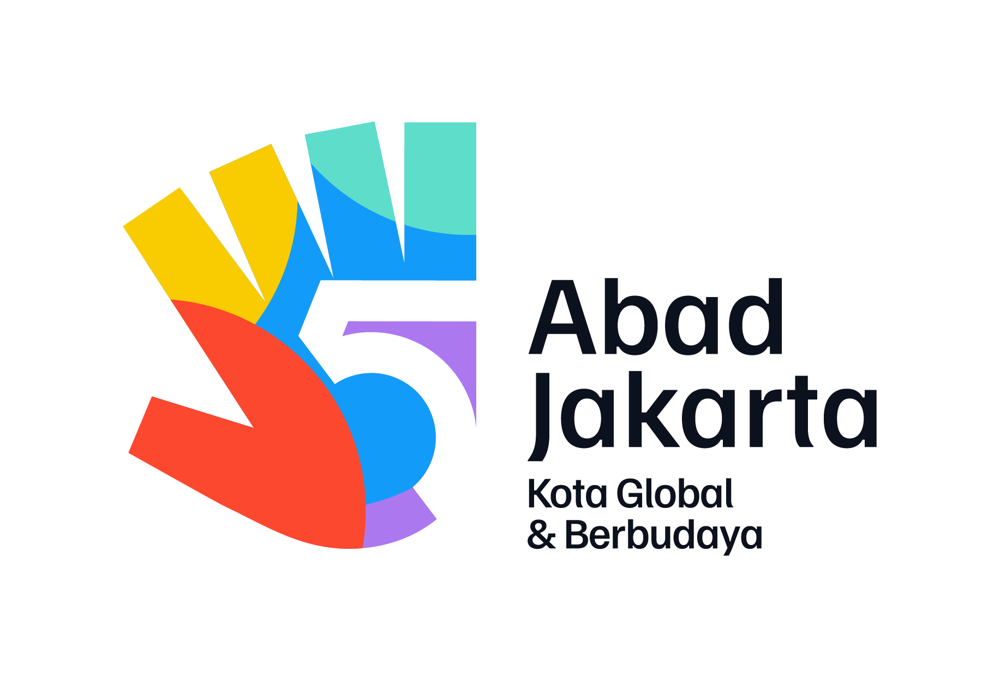
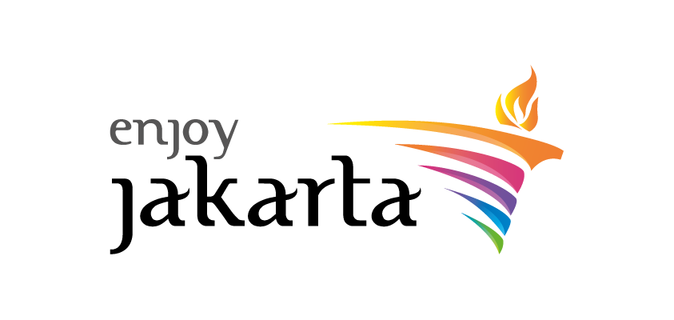
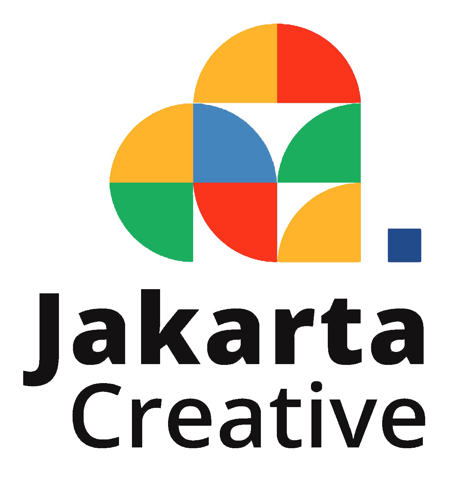
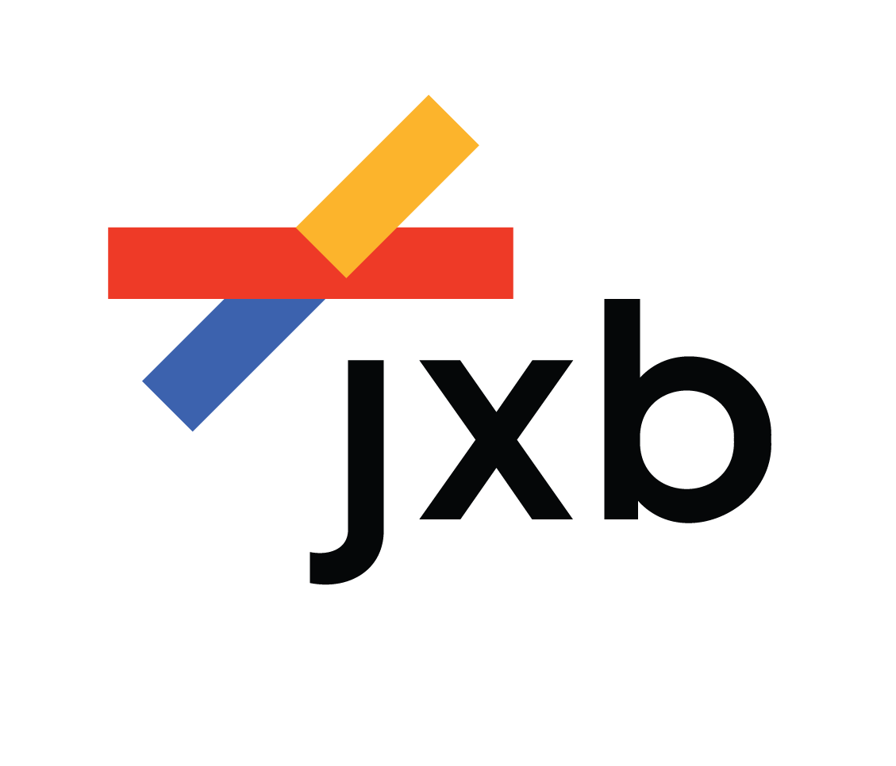
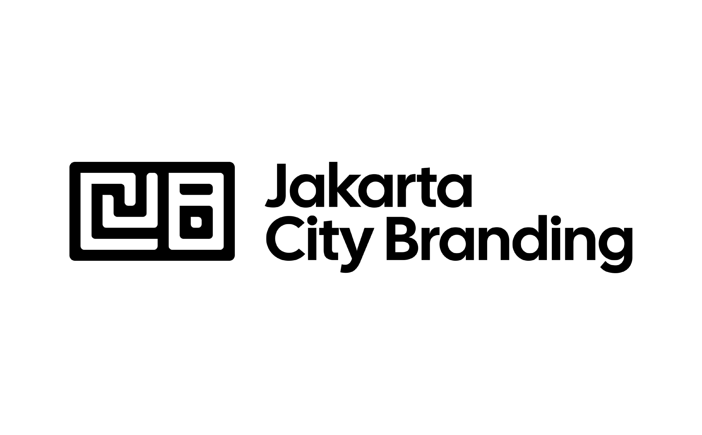
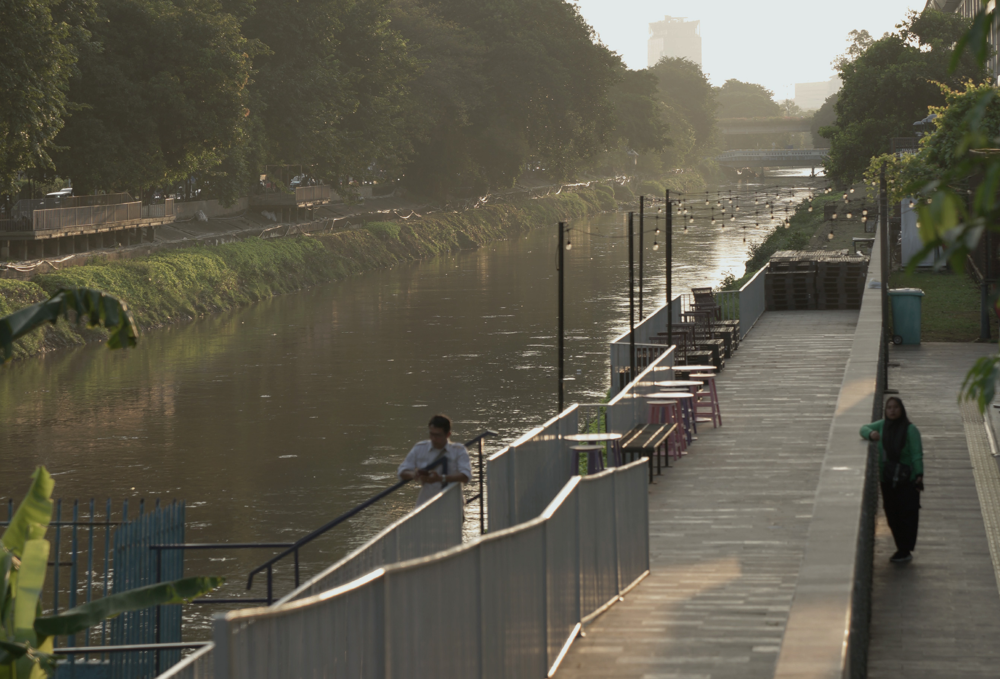

Partners





Jakarta ReImagined tahun ini merupakan event Placemaking Design Competition milik Dinas Pariwisata Provinsi DKI Jakarta yang diselenggarakan oleh Jakarta Experience Board (JxB). Acara ini diadakan Pemprov DKI Jakarta dalam rangka menyambut usia kota Jakarta yang ke 500 tahun pada 22 Juni 2027.
Jakarta ReImagined: Placemaking Design Competition hadir sebagai ruang yang dirancang untuk mewadahi ide-ide kreatif mengenai pengembangan Jakarta menuju kota global masa depan. Kompetisi ini melibatkan seluruh unsur masyarakat Jakarta dan sekitarnya.





